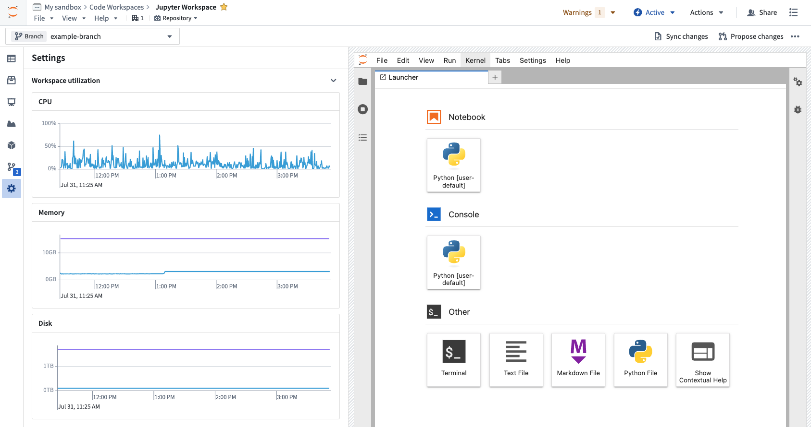
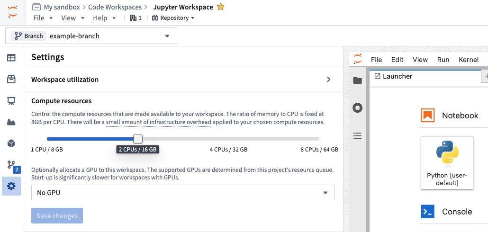
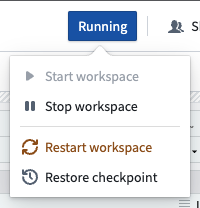

With Code Workspaces, users can securely connect to existing internal systems and build analyses, models, applications, or entire workflows on data with Foundryâs access controls and data permissioning.
Code workspaces spin up dedicated Foundry computation modules for execution, which utilizes Foundry compute-seconds while in use.
Code workspace usage is tracked as Foundry compute-seconds (see usage types). Compute seconds are measured as long as the workspace is starting or active. There are a few factors to determine compute seconds used:
When paying for Foundry usage, the default rates are as follows:
| Workspace | GPU Type | Usage Rate |
|---|---|---|
| VS Code (default profile) | No GPU | 0 |
| VS Code | No GPU | 0.1 |
| JupyterLab® | No GPU | 0.1 |
| RStudio® | No GPU | 0.1 |
| Dash | No GPU | 0.1 |
| Streamlit | No GPU | 0.1 |
| Shiny® | No GPU | 0.1 |
| Any workspace | T4 GPU | 1.2 |
| Any workspace | A100 GPU | 1.3 |
| Any workspace | A10G GPU | 1.5 |
| Any workspace | L4 GPU | 2.1 |
| Any workspace | V100 GPU | 3.0 |
| Any workspace | H100 GPU | 4.7 |
If you have an enterprise contract with Palantir, contact your Palantir representative before proceeding with compute usage calculations.
vcpu_compute_seconds = max(vCPUs, GiB_RAM/ 7.5) * vcpu_usage_rate * time_active_in_seconds
The following formula measures GPU compute seconds:
gpu_compute_seconds = GPUs * gpu_usage_rate * time_active_in_seconds
:::callout{theme="neutral"} Each code workspace comes with a Foundry sidecar that introduces a small overhead of 0.25 vCPUs and 3 GiB of RAM :::
| Workspace | Compute Profile | Duration | Incurred Usage |
|---|---|---|---|
| VS Code | Default profile (0.75 CPUs/6 GiB) |
1 hour | 0 compute-seconds |
| VS Code | 4 CPUs/32 GiB | 1 hour | 1680 compute-seconds |
| JupyterLab® | 1 CPU/8 GiB | 1 hour | 528 compute-seconds |
| Any workspace | 1 T4 GPU | 1 hour | 4320 compute-seconds |
| Any workspace | 1 A10G GPU | 1 hour | 5400 compute-seconds |
| Any workspace | 1 V100 GPU | 1 hour | 10800 compute-seconds |
By default, new VS Code workspaces are provisioned with 0.75 CPU and 6 GB memory. This default profile is free of charge and not subject to usage-based pricing (UBP). You can adjust these resources when creating a workspace using the Advanced configuration section, or later by using the Compute resources slider in the settings side panel. If you increase memory, CPU, or add GPUs to your workspace, standard UBP pricing will apply for those upgrades.
Live workspace utilization metrics are available for CPU, memory and disk usage. To view these metrics, expand the Workspace utilization section of the Settings side panel.

When a Code Workspace is opened, Foundry will launch a dedicated compute session for the workspace. The session's status is STARTING until the session is available, becomes INITIALIZING, and then RUNNING. When the user manually stops the session, or when no user interaction is detected for longer than the auto-shutdown timeout, the session will become STOPPING and then IDLE. Foundry compute seconds are only used when the session is INITIALIZING or RUNNING.
All the possible states for a workspace are listed below. The states when the code workspace uses compute are indicated with right arrows (â).
STARTING: a new session was requestedINITIALIZING: the session is available and is being configRUNNING: the session is available and usableSTOPPING: the session is stoppingIDLE: the session is stoppedFAILED: an error occurredTERMINATING: the session is being deleted permanentlyNOT STARTED: no session available for this workspaceCode Workspaces measure compute seconds in the same manner as other scaling compute in the platform. Review the general Foundry Compute documentation for a description of how it is measured.
Foundry Code Workspaces attribute all associated compute to the workspace resource in the filesystem. You can always view the usage of all sessions in the Resource Management Application.
The compute usage of a Code Workspace session is directly proportional to the dedicated computational resources available to session and the length of the session.
To manage the hardware size of your session, go to Settings > Compute Resources. You can choose from a variety of different session sizes. The selected CPU and memory scale up to the maximum available in your project's resource queue. If your enrollment uses managed compute profiles, the compute you can select is determined by the compute profiles imported into your project. Refer to the screenshot below for an indication of how you can choose sizes and optionally allocate GPUs to your workspace. The resource queue in the project containing your workspace determines available GPUs. Learn more about using GPUs in projects and leveraging GPUs for model training.

Long-running sessions utilize more compute than short-running sessions. Be sure to tune your auto-shutdown time to be consistent with your working style to not use more compute than necessary. You should manually stop sessions when you know you are done.
